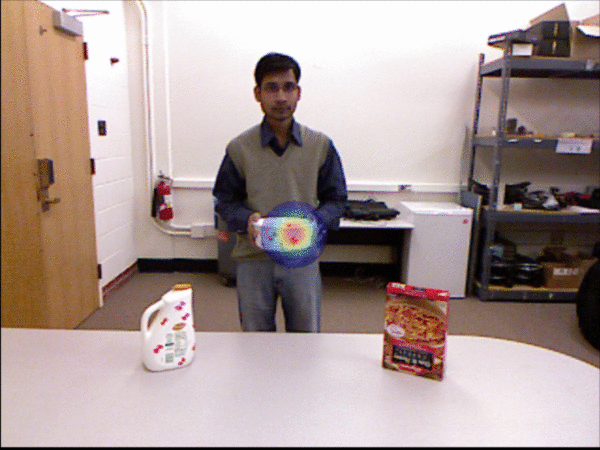
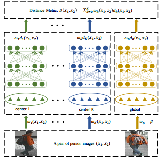
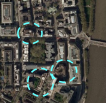

News
- NEW 06/2018 One Paper accepted by IJCV 2018
- 02/2018 One Paper accepted by CVPR 2018.
- 04/2017: One paper accepted by ICCV 2017.
- 09/2016: Started my Ph.D. at UCLA
Publications

|
Configurable 3D Scene Synthesis and 2D Image Rendering
with Per-Pixel Ground Truth using Stochastic Grammars
* Equal contributions
Internatianal Journal of Computer Vision (IJCV) 2018
Paper /
Demo
Employ physics-based rendering to synthesize photorealistic RGB images while automatically synthesizing detailed,per-pixel ground truth data, including visible surface depth and normal, object identity and material information, as well as illumination.
|

|
Human-centric Indoor Scene Synthesis using Stochastic Grammar
Siyuan Qi,
Yixin Zhu ,
Siyuan Huang,
Chenfanfu Jiang ,
Song-Chun Zhu
IEEE Conference on Computer Vision and Pattern Recognition (CVPR) 2018
Paper /
Project /
Code /
Bibtex
Present a human-centric method to sample and synthesize 3D room layouts and 2D images thereof, for the purpose of obtaining large-scale 2D/3D image data with the perfect per-pixel ground truth.
|
|

|
Predicting Human Activities Using Stochastic Grammar
Siyuan Qi,
Siyuan Huang,
Ping Wei,
Song-Chun Zhu
IEEE International Conference on Computer Vision (ICCV) 2017
Paper /
Bibtex /
Code
Use a stochastic grammar model to capture the compositional structure of events, integrating human actions, objects, and their affordances for modeling the rich context between human and environment.
|
|

|
Nonlinear Local Metric Learning for Person Re-identification
Siyuan Huang,
Jiwen Lu,
Jie Zhou,
Anil K. Jain
arXiv 2015
arXiv Paper
Utilize the merits of both local metric learning and deep neural network to exploit the complex nonlinear transformations in the feature space of person re-identification data.
|
|

|
Building Change Detection Based on 3D reconstruction
Baohua Chen,
Lei Deng,
Yueqi Duan,
Siyuan Huang,
Jie Zhou
IEEE International Conference on Image Processing (ICIP) 2015
Paper /
Bibtex
Propose a change detection framework based on RGB-D map generated by 3D reconstruction which can overcome the large illumination changes .
|
|